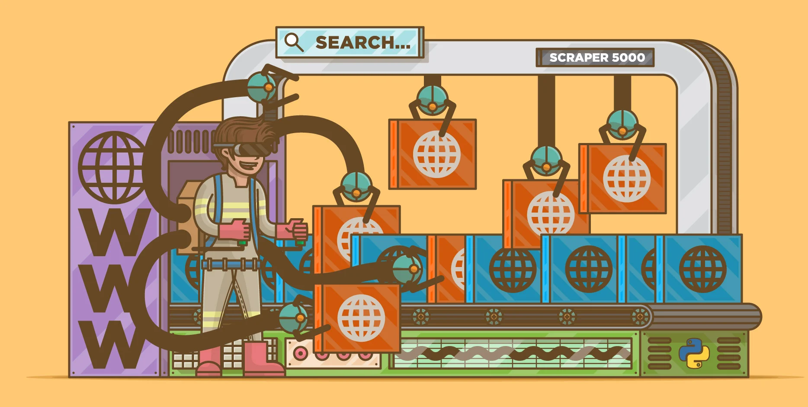
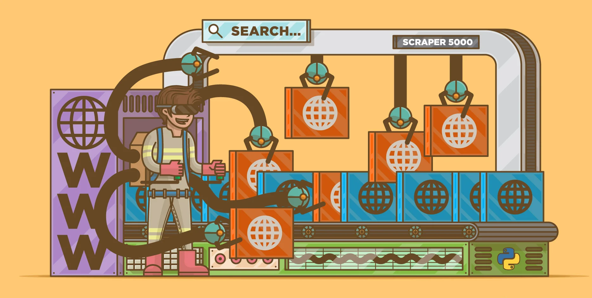
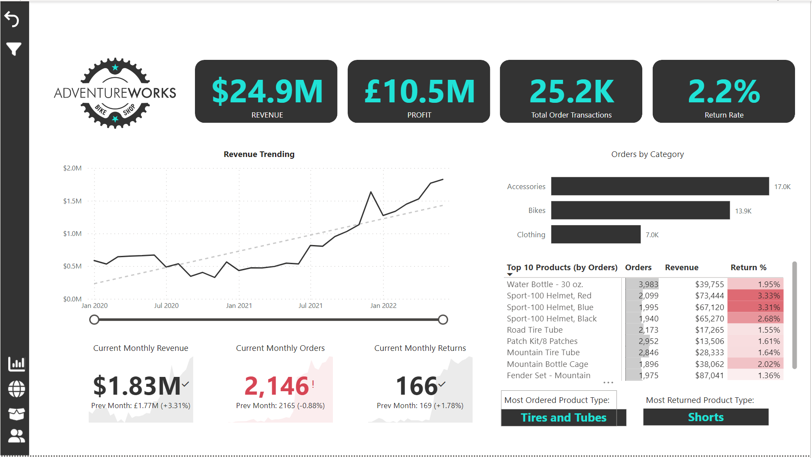
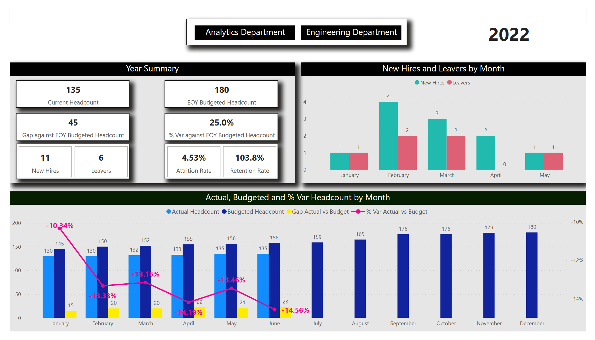

Designed and implemented a sentiment classifier to classify tweets as positive, negative or neutral utilizing
Linear Support Vector Classifier (SVC); Obtained accuracy of 63% and f1-score of 60%. Tweets initially
cleaned using regular expressions to remove hyperlinks, URLs and unnecessary characters. TweetTokenizer
utilized as it handles emojis, hashtags and other elements of a tweet well. As sentiment of tweet is the only
point of interest, stemming is done instead of lemmatization.
 

Developed an automated web scraper for a client that fetches data from a dynamic javascript enabled website
containing course data for the University of Windsor and stores it in an Excel file every 20 minutes using
Python, Selenium and Visual Basic Advanced (VBA). Created a macro button in Excel to run VBA code
and start the Python script. Utilized 'xlwings' library to facilitate data collection into a pandas dataframe
and establish connection between Python and Excel.

Created an interactive Power BI dashboard to track KPIs like Revenue, Profit, and Return rate using Sales,
Product, and Returns data of a Bike Shop. Used Power Query to perform Extract, Transform, Load (ETL)
processes; created Relational Data Models. Data Analysis Expressions (DAX) used to create calculated
columns and measures. Separate dashboard pages with dynamic charts, filters, slicers and maps were utilized
to compare regional performance, understand customer behavior, and analyze product-level trends.

Utilized Power BI to craft a dashboard to track Key Performance Indicators (KPIs) related to employee
headcount statistics like Current headcount, Budgeted headcount, New hires, Retention and Attrition rate
etc. for Analytics and Engineering Departments; Utilized dual-axis clustered column charts to compare
actual, budgeted and % variance actual versus budgeted headcount by month